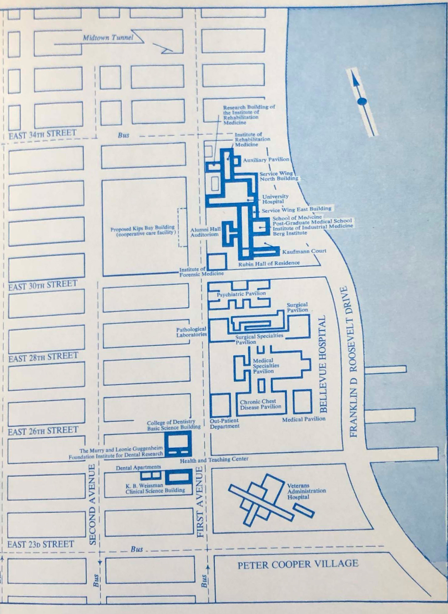

New York City's Biggest Landowner?
New York University and New York City's Real Estate, 1997-2021
Source: New York City Department of City Planning Primary Land Use Tax Output (PLUTO)
One of the largest private universities in New York City, New York University (NYU) has had a long and varied history — often intertwined with the history of the city itself.
A group of influential New Yorkers formed the university in 1831 under a different name, “University of the City of New-York.” In 1835, the University Council
bought the northeast block of Washington Square East for $40,000, and since then NYU has maintained its campus in lower Manhattan and the West Village. Over time, the university has weathered intense periods of expansion and growth, as well as periods of financial decline and low enrollment.
Today, the university operates three campuses: New York, Abu Dhabi, and Shanghai. There are in total 53,576 students enrolled, 55% of which are undergraduate students. The cost of an undergraduate degree per year can total $80,878 for undergraduate students (when factoring in living expenses) and $56,500 just in tuition and fees. The average need-based financial aid award was $37,256 for undergraduate students, and many students still need to take on debt in order to cover the costs of attendance. The average total indebtedness of the 2020 graduating class was $28,426. Others may come from more affluent family backgrounds and the cost of attendance may not be as important. Based on data from 2015, the median family income of undergraduate students at NYU was $175,082 (2021 dollars, adjusted from 2015 dollars), ranked 11th out of 173 New York colleges and 94th out of 2,395 colleges in the U.S.
NYU is widely considered one of the worst universities for leaving families and graduate students with insurmountable amounts of debt. An analysis conducted by The Wall Street Journal shows that on average in the past year the university covered 62% of undergraduates’ financial need — the lowest of any private university with an endowment greater than $1 billion. Parents of 2018 and 2019 undergraduate classes borrowed a median of $74,000, more than at 99% of four-year U.S. institutions. And the majority of NYU graduate programs had high debt-loads — meaning graduate students borrowed more than they earned two-years after graduation. There are more graduate programs with high debt-loads at NYU than at any other U.S. university. NYU undergraduate and graduate are not financially well-served by the university.
Yet the university does have considerable financial resources. As of 2020, the university had $9,598,263,000 in net assets and as of 2019 at least nine employees including the president made more than $1 million in compensation. Three employees made more than $3 million in compensation. The university is only required to report publicly the five highest paid individuals, but collectively these individuals received $14.9 million in compensation in 2019. As of August 2020, NYU’s endowment was worth $4.7 billion and distributions over the past 20 years total $2.1 billion.
Is New York University the city’s biggest landowner?
That’s a debatable question and answering it depends on how one defines it.
Currently, NYU owns 116 buildings throughout the city — primarily concentrated in Manhattan and Brooklyn. In terms of square feet — NYU owns 0.32% of all lots that are not government owned and 1.9% of all built area (this includes the individual square feet of each floor in a building). The city also owns 2.5% of the total assessed value for all properties that are not government-owned. (See the note on the figure to the left for issues with categorizing publicly owned property).
Not only are there different ways to measure the biggest landlord (whether considering the number of buildings, the total square footage, or the total assessed value), it’s hard to identify how much property belongs to one entity.
Most cities record information on the property owner as a text variable; there’s rarely a numeric code to identify the owner. These text fields are subject to many of the inconsistencies that stem from encoding data in text: capitalization, spelling errors, strange symbols, and words that are cut off.
Why care about property ownership?
- Increased transparency gives residents insight into what actors have a stake in their neighborhood and to what extent. Information on beneficial ownership may empower organizing efforts or simply clarify the non-neutral position of certain actors.
- Increased transparency helps residents determine who is benefitting from accumulation of real estate in the neighborhood. This information may influence resident decisions and organizing efforts around demanding more community benefits from private entities.
- Increased transparency allows residents to make connections between local issues and city-wide trends, especially with issues of land use and development.
Beneficial ownership and NYU
In the context of universities, intentional anonymity through vehicles like LLCs is less of a problem. NYU does not appear to hold its NYC property in real estate trusts or LLCs and most property is listed under “New York University.” (Note: additional research on properties linked to the same addresses associated with NYU might reveal the opposite is true, but in general it would be difficult to validate this assumption).
Still, information on the extent and amount of NYU’s property ownership in NYC is not widely accessible. The only comprehensive source on university property ownership in the city that I’ve encountered is an online analysis by independent researcher Aleksey Bilogur. Using property ownership data from 2016, Bilogur finds that Columbia and NYU are the largest individual owners of addresses and of individual 1-bedroom footprints (i.e. a comparison of ownership in terms of the average 1-bedroom size). Bilogur also examines ownership by wealth and notes that NYU is the wealthiest landowner in terms of total building value.
Additionally, NYU’s campus maps may provide insight into the scope and breadth of NYU’s ownership, but they do not link to any available data base and they do not list all properties that the university owns (also, the university may lease the property it lists on campus maps).
Transparency of NYU’s beneficial ownership, meaning the properties in which it has primary ownership, is important because NYU is a large, influential institution in New York City. While many NYC residents know the university exists and likely associate major landmarks like Washington Square Park with its presence, I do not think that they understand the extent of its property ownership in the city, unless they are part of the institution.
One of the university’s main attractions is that, in the words of NYU Wagner’s website, it is “in and of NYC.” The university’s alumni frequently end up in city government roles — even the current mayor of New York, Bill de Blasio, attended NYU. But the university is not accessible to NYC residents. Even if an event is theoretically open to the public, one needs to a familiarity with the structure and layout of the campus. The cost of attendance is expensive and, perhaps as a result, the socioeconomic distribution of students does not match the city as a whole. The $175,082 median household income of students is almost three times the median household income of $68,322 in NYC (2021 dollars, adjusted from 2019 dollars). The university manages a community fund and distributes grants of $500-$2,500 to local organizations, but donations are employee driven. NYU actively maintains, and is improving, public open spaces within and adjacent to its campus. However, the tradeoff is that these open spaces are provided to offset NYU’s campus expansions.
NYU is a private, non-profit university. This means that every expansion of the university, if it occurs on land that is not already owned by a non-profit, removes the land and buildings from the city’s property tax base. There are some exceptions. Spaces with for-profit uses, not related to the university’s primary functions may be taxable. In checking the property tax bills of several buildings, I found that NYU was paying property taxes on some residential and commercial spaces. However, in general, even for uses like student and faculty housing, universities do not pay property taxes.
Private, non-profit universities do not pay taxes. Yet there is a paradox to this. Given that the university does not pay taxes, one of the best ways to extract value is from property ownership. In cities like New York, the loss to the city’s property tax base may be large, but negligible compared to the size of the city’s overall tax base. However, in smaller cities, the tax-exempt status of a large, private university can be actively harmful. In March 2020, protestors in New Haven called on Yale University to pay its fair share and pointed to the vast discrepancies between Yale’s campus and the adjacent public school system. Yale currently gives New Haven a payment in lieu of taxes (PILOT) of $13 million, but the estimated taxes that it would pay if not tax-exempt are closer to $102 million. As far as I can tell, NYU does not make any PILOTs to the City of New York and the PILOT of nearby Columbia University is only $7,500. For comparison, MIT paid the city of Cambridge almost $84,000,000 in FY 2020 as a combination of volunteer real estate taxes, PILOTs, and other fees — making MIT the number one tax payer in the city of Cambridge and generating 14.9% of total Cambridge tax revenues. MIT also publishes an annual “Town and Gown” report about its relationship and contributions to the city of Cambridge. The MIT-Cambridge relationship is an example of a successful PILOT agreement, but in general PILOTs can be secretive and ad-hoc since they’re voluntary programs.
Universities as non-profits
The tax-exempt status of universities implies that we view them as a public good. The Association of American Universities writes that college and universities are tax exempt because of their “educational mission of teaching, research, and public service.” The tax-exempt status allows universities to maximize the benefits that they offer society, which includes the development of a highly-educated and skilled workforce as well as encouraging new innovations to spur economic growth and improve our quality of life. Universities can make use of their tax exempt status to fund “academic programs, student financial aid, research, public extension activities, and their overall operations”.
Even if the public good of higher education and research is not in contention, there are several flaws with considering private universities as tax-exempt.
- The exemption benefits non-profit institutions with the largest land holdings, not those that provide the greatest public benefits.
- The cost of the tax-exemption is the direct burden of the city, while the benefits provided by the university are more diffuse (benefits can be statewide, federal, and even global).
- The educational services they provide may not be accessible to residents in the municipality, yet the university uses municipal services.
- Lastly, even as universities may stabilize or reinvigorate economies, they may adversely impact their surrounding communities through processes of gentrification and displacement — often called “studentification.” Studentification both overlaps with, and diverges from, conventional definitions of gentrification. It does tend to result in “social, cultural, political, and economic changes to neighborhoods” that can result in the displacement of low-income communities and communities of color.
Purpose
The purpose in this article is to explore NYU’s relationship to property in New York City. It aims to answer the following:
- How much land do NYU and its affiliated institutions own in NYC?
- Where in the city are NYU properties located?
- How much total tax revenue might be raised if all NYU properties were taxable?
- How has NYU’s relationship to property ownership in the city changed over time?
Methods
For this analysis, I primarily used two datasets. The New York City Primary Land Use Tax Output from the Department of City Planning and the Real Property Assessment Data from the Department of Finance. For both datasets, I appended all years together into one file to compare over time. I used a series of regular expressions, as well as manual searches, to extract NYU ownership information. For the purposes of this analysis, NYU ownership refers to ownership of property by NYU and any NYU affiliated institution (such as the NYU Law School Foundation or NYU Langone). In general, I found NYU property under the following owner names:
- New York University
- New York University School of Law Foundation
- New York University, a NY Education Corporation
- NY University
- NYU Hospitals Center
- NYU Langone Hospitals
For more details on my approach, as well as information on specific figures and calculations, see the methodology and data sources on Github.
I. Ranking NYC’s largest landowners
Ranking NYC owners by total building square feet and by the number of buildings shows that most of the land in NYC is publicly owned. I excluded them from the figures below, but organizations like the NYC Housing Authority, the NYC Department of Education, the National Park Service, and the Port Authority were ranked highest. After excluding government agencies, New York University is the third biggest landowner when ranking by building square feet or by the number of buildings. Overall, the biggest landowners tend to be universities, hospitals, or affordable housing management companies. The plot on the left shows that Riverbay Corporation, the management company for the Mitchell-Lama housing cooperative Co-op city, and the Cathedral of St. John the Divine own the most land in terms of total building square feet. In terms of the number of buildings, housing development fund corporations dominate, as the plot on the right demonstrates.
The total number of square feet and the total number of buildings for NYU is lower than reported earlier. This is because the analysis does not account for differences in spelling or different entities associated with NYU. The problem with analyzing property ownership in this way is that any owner name is subject to such inconsistencies — as a result, the number of total square feet and the total number of buildings is likely an undercount of the true value and may fail to include owners that are recorded under differently spelled names. For a complete list of owners dropped from these figures, see this spreadsheet.
II. NYU’s property ownership in 2021 by community district

- To explore the above maps citywide with a static map, use this link.
Most NYU property, as one might expect, is in Manhattan community district 2, which encompasses the neighborhoods of Greenwich Village, Soho, Noho, Chinatown, and Little Italy. The university owns 76 buildings in community district 2, many of which are clustered around Washington Square Park. Although NYU’s presence in Washington Square Park has been the case for most of its existence, there are some buildings that were bought more recently. For example, NYU bought 16 Cooper Square in 2004. Some buildings have also been under NYU’s control for many years but may have changed over time. The NYU Law Foundation has owned 139 MacDougal Street, the site of the former Provincetown Playhouse, since 1984. But in 2009, the building was demolished to build the Law School’s Wilf Hall. And then in 2011, ownership formally switched over to NYU. The Law School Foundation also owns several townhouses, scattered throughout Greenwich Village, which appear to function as housing for faculty.
 Map of Washington Square Park from 1960. Source: NYU Library Special Collections Archive.
Map of Washington Square Park from 1960. Source: NYU Library Special Collections Archive.

There are in total 8 buildings in the East Village and Lower East Side neighborhoods, the neighborhoods in community district 3. Most are NYU dorms or faculty housing. There’s 120 East 12th Street, which is a dormitory located on the site of the former St. Ann’s Church (all that remains, bizarrely, is the church’s façade). NYU bought the building in 2010. NYU bought several other buildings like 67 and 31 3rd Avenue in 1984 and they currently operate as dorms.
Community district 5, Midtown Manhattan, has one NYU dorm building. To the east, Community district 6 encompasses most of NYU’s medical and dental facilities. The primary location of NYU Langone is in this community district. Many of these buildings have been in NYU’s control, or at least a part of NYU’s campus, since at least the 1970s.
Community district 8, Manhattan’s Upper East Side, houses NYU’s Institute of Fine Arts and there is one building in Bronx Community District 8, which the NYU Law School Foundation bought in 2000.
Downtown Brooklyn, which is Brooklyn community district 2, is the center of engineering at NYU. It was originally the campus of Brooklyn Polytechnic Institute. In 2014, the two schools officially merged and one year later, $100 million donation from Chandrika and Ranjan Tandon resulted in its name change to NYU Tandon School of Engineering.
There are three other community districts in Brooklyn (community districts 6, 7, and 16) where NYU recently expanded. NYU Langone and NYU Hospitals own all the buildings in these community districts, and most buildings are still under construction.
II. Measures of property ownership overtime
Since 2021, the amount of building square feet of NYU-owned buildings has steadily increased. The number of NYU-owned buildings has also increased, but at a more moderate pace. In 2014, NYU begins to have a presence in Brooklyn —due to its merger with the Polytechnic Institute of Brooklyn. The moderate increases in the number of buildings would be even flatter if excluding the increased property in Brooklyn from the graphs.
In general, the notion that NYU is rapidly expanding and buying up property throughout the city does not seem to be the case over time. The plot that shows the building square footage across all NYU-owned buildings does suggest that the university may be increasing the density of its buildings (either through the new buildings it’s acquiring or through demolition of existing buildings).
Information on deed transactions — where NYU is either the buyer or the seller — does illustrate periods in which NYU bought and sold more property. This figure counters the previous two plots, which suggest that NYU’s ownership of properties has not changed much since 2021.
Deed records are also available as early as the mid-1960s. They reveal periods of increased buying activity in the mid-1980s, early 2000s, and around 2010. They also show that the university sold property in the mid-1970s, the early 2000s, and around 2010.
When the periods of increased buying and selling coincide, they may balance out so that the total number of properties does not increase or decrease drastically. However, NYU’s increased selling in 2011 may account for the drop in building square feet around the same time.
Lastly, I estimate NYU’s cumulative taxes since 2002. By the end of 2021, over the previous 20-year period, NYU would have paid a little more than $2 billion in taxes. These estimates are based on assuming a Class 4 tax category (offices and retail) and using the city’s assessed value calculations. I estimate taxes for all NYU properties, regardless of their purpose, and I do not remove buildings where NYU might already pay taxes. For example, buildings with for-profit uses might be taxable (NYU did pay $350,000,000 in fees, insurance, and taxes — but it’s not clear what percentage is NYC property tax).
Still, $2 billion is quite large. To put that in perspective, 1 billion seconds is 31.69 years and it would take someone 27,397.26 years to save $1 billion if they put away $100 each day.
III. Inclusion of condo units
Some of the earlier analyses might undercount NYU’s ownership of property. Datasets like the Primary Land Use Tax Output (PLUTO) from the Department of City Planning aggregate condominium units at the building level. In PLUTO, 333 East 30th Street shows up under the condominium name for the whole building. If NYU owns a single condominium unit, PLUTO would not have a record of NYU as the owner.
I checked my analyses with the Real Property Assessment Data (RPAD) from the Department of Finance. These datasets count condominium units individually. Including condominium unit counts in the analysis may provide insight into places where NYU is investing in residential housing — possibly for students and faculty.
The above plots do not seem drastically different. The plot of total building square feet (on the left) has a much steeper increase starting in 2009. This increase occurs in the same period and shows a more direct relationship to as the jump in the number of deed transactions where NYU was a buyer (the years just before and after 2010).
The number of buildings also increases more steeply. The sharp increase prior to 2001 is likely a missing data issue. Still, the figure is steeper than when condos were excluded. The total number of buildings and condo units is also much higher. Even though condo units may not add much to total counts of building square feet, they more than double the total number of buildings that NYU owns. Like the calculations with building square feet, the total number of buildings and condo units that NYU owns experiences a jump around 2005. In comparison to previous analyses, these two figures suggest that NYU not only invests in real estate that may directly benefit education and research, but also residential real estate. It’s possible that some of these condos are not tax-exempt, depending on the use of the space. I scanned a random sample of 2020 property tax bills and encountered some rental buildings where NYU is paying taxes. However, there are other types of residential buildings, faculty or student housing for example, that remain tax-exempt.
The following two maps directly compare NYU’s ownership of property over time — just counting NYU buildings and condominium units. Spatially, the two comparisons are similar. Although when considering condo units, NYU’s expansion in Brooklyn seems accelerated. These maps also provide a clear comparison of the differences in NYU’s spatial footprint between 2002 and 2021. In 2002, NYU had not formally merged with the Polytechnic Institute of Brooklyn and NYU Langone had not moved into Brooklyn community districts 6, 7, and 15.
 Source: New York City, Department of Finance; New York City, Department of City Planning
Source: New York City, Department of Finance; New York City, Department of City Planning
Conclusion
So, should all private universities become taxable institutions? Personally, I am cautious in recommending that NYU pay full real estate taxes. If universities do become taxable, the burden would likely fall on students and more vulnerable employees like adjuncts. At the same time, private universities are becoming more private than ever as tuition rises each year.
While the perception that NYU is continually expanding does not receive full support in the data, NYU’s deed transactions do reveal a long history of real estate development, and possibly speculation. Given that the university does devote so many resources to buying and selling property, I believe that the university can and should commit more resources to studying the impacts of its actions on NYC neighborhoods, especially as it relates to real estate.
The expansion of NYU’s medical facilities in Brooklyn — particularly in community districts 6, 7, and 15 — may bring important healthcare to under-resourced communities. But if the expansion of medical facilities occurs alongside the expansion of other university functions, it may exacerbate processes of gentrification. MIT’s “Town and Gown” study, along with its considerable payments to the City of Cambridge, is an insightful model on how the relationship between universities and municipal governments might improve through substantial investments from universities. I hope that NYU will eventually engage in a similar process and consider how PILOTs and voluntary real estate taxes may be mutually beneficial.
Future research
This analysis is incomplete. I hope to continue this project with the following:
- Explore the history of property ownership with other universities. While I’ve singled NYU out here, this issue is not limited to NYU.
- Fully georeference historical campus maps for the early 1900s, 1950, 1960, 1970, and 1978. I hope to compare these maps to current campus to assess how the university’s public presentation of itself has changed over time.
- FOIL RPAD data directly from the city for more complete owner information in 1990–2000.
- Turn ACRIS transactions into spatial data and identify the inflows and outflows of property transactions by community district.
- A network analysis on student walking and transportation patterns to understand the effect of university expansions and study the relationship between university expansions and studentification.
- Identify data sources on student housing to identify how student housing needs may decrease the supply of affordable housing and contribute to evictions.
- Examine the community benefits reported to the IRS by NYU Langone hospitals and explore whether universities and other large, private non-profits should file similar tax schedules.